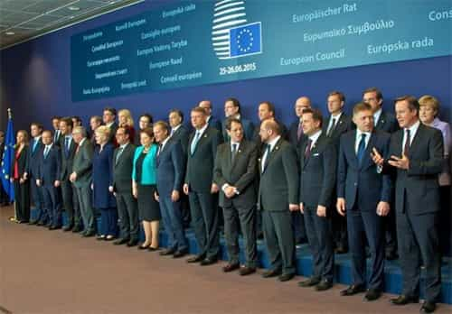

André is a young European who left his decaying country in 2012 for greener pastures. He enjoys exploring subterranean places, reading about a host of interconnected topics, and yearns for Tradition.


Last year has ended and a new year has begun. To the liberals, 2016 turned to be an annus horribilis, full of politically incorrect triumphs and events one could not have hoped even two years ego. To us, it was at least one of the most interesting and stimulating years we went through—and 2017 seems replete of potentialities still hard to gauge precisely.
If you add up each digit of the number 2016, you get a 9. If you do the same with the number 2017, what you get is a 1. 2016 was the end of a cycle, the ultimate accumulation of the exhausted potentialities of a now-past time, whereas 2017 starts something afresh.
Even if you believe numerology is little more than superstition, no one will wish that things just keep going as they did. Any continuity with the Bush-Obama eras seems debarred from our minds and day-to-day vocabulary.
In many aspects last year has been a prodigious, prophetic one. We’ve seen the British successfully vote their country out of the bureaucratic monster called EU, the Italians drive out a Prime Minister who owed his place to globalist elites, and more importantly the Americans elect a yellow-haired desperado, the real estate mogul Donald Trump.
The past two months have been especially action-packed. Trump’s election was deemed impossible, disregarded before it didn’t happen—and it happened in a thunderclap. The mainstream media has been melting down ever more noticeably, ruining the illusion it is fatly paid to maintain at all times. Salafi terrorists, though supported by the globalist elites, have been driven out of Aleppo in Syria, and said country managed to get a ceasefire without the usual Uncle Sam’s intervention. All these show substantial parts of the geopolitical equilibrium shifting swiftly and dramatically.
The end of the Cold War saw the apparently universal triumph of liberal democracy. One world, one crowd, one only possible future and one debilitating consumerist culture supposed to fit all—embrace the global melting-pot. For sure, September 11 attacks dealt a powerful blow to the US’ supposed invulnerability as the spearhead of the globalist New World Order. Some confusedly sensed that the World Trade Center collapse marked the end of an era, but since that, most political events happened through a tedious rhythm similar to the SJW’s “long walk through the institutions.” Well, this isn’t the case anymore, and the rapid pace of last year events makes it harder to deny that the emperor’s naked.
In politics, the Leftist establishment kept using essentially conservative arguments, such as calling Trump and the Alt-Right “un-American,” arguing that those who already hold the institutions are “educated” or that we are causing ideological war and so on. In the administrations, whether in the US, among the EU unelected technocrat or in Swiss banks, in the NGOs, media groups and academia, thousands of globocrats and social engineers are feeling like they’re going for a wild ride. They want the world to remain as it was during the Bush-Obama eras. They are the only ones who want it.

Of course, and as if they were no more than the embodiment of exhausted potentialities, their only answer to more and more evident problems consists in doing the same things than before. EU shows unable to protect its member countries against swarms of invasive immigrants? Less sovereignty, less room for decision, more EU! Crime spreads in unprotected zones just as the US deep State strengthens its spying grip on civilians? There must still be too many boundaries and protections. Wind them down! Replace the walls of your house—if you can still afford one—with pane glasses, give up all cash and pay everything with a traceable credit card. If you’ve got a problem with the lenient treatment liberal-cherished groups get and with the harsh ways the establishment deals with you, the problem must be yours.
These complacent apparatchiks, who always lauded themselves as “progressive” pioneers, are now nervously roaming on an empty platform, hiding their eyes from how the twenty-first century train ran away without them. Less than a decade ago, they enjoyed despising openly what they deemed conservative or reactionary, and now, they keep negating reality and trying to force-apply erroneous solutions. History is disproving their doctrine—and, to me at least, this feels immensely satisfying.
Tangentially related to the globalist establishment’s lack of smartness are the widely broadcast events of Syria. This Middle Eastern country was showered with global attention and will remain a symbol, but not because of the reasons the elite would like. Instead, the victory of Bashar Al-Assad’s legitimate government shows the failure of a behind-the-scenes scheme connecting the US Deep State with the worst kinds of Islam through the House of Saud. Parts of the scheme have been appearing on various operational theatres during the last thirty years. The liberation of East Aleppo, though, suddenly unearthed a wider picture, full of CIA and MI6 officers, of NATO military advisers, of weaponry from Western countries, and covered by the thick propaganda system of mainstream media.
The Islamist regression strategy was greatly helped by US intelligence for various reasons, including driving the USSR off Afghanistan. By an ironic and perhaps fair historical twist, Russia is the first one contributing today to rout said strategy off the Middle East. Between those two points in time, Islamist extremism contributed to destroyed Yugoslavia, Iraq, Afghanistan for the second time, Libya, Syria, Tunisia… as well as turning, in less than a generation, the peaceful Schengen area in a zone of fear and intrusive policing.
Also ironically, the European countries who led themselves entering this dirty game out of unwillingness to stand independently will likely be the most affected. Invaded by millions of fresh immigrants to top other millions of older, but barely more civilized ones, Europe seems now far from peace, stability and economic prosperity for generations.
The red pill has been swallowed by millions, doubtlessly a bit thanks to our own efforts, but mostly because of how harsh and bitter the West has become. Time has come to struggle openly and take the reins of these societies we’ve been stolen from.
We live in a rather strange world where entering into a political, media or academic career implies a daily self-censorship about important parts of reality and hoping we won’t get attacked from above—the institutionally entrenched SJWs—or below—the violent BLM-type crowds. The topics that matter, what really tugs front and back of our consciousness, can only be discussed on the outskirts of society.
What can we do with our current elites? Why these professorships, these “researchers” and other “-watchers” who keep flooding the mainstream outlets with a mixture of hysteria, pompousness and more or less real whistle-blowing about stuff that doesn’t really matter to us? Why journalists when they do better know how to judge than how to make research? Why college where tuition are higher than a life’s wage and where SJW madness reigns supreme?
A potential “Trumpist” deep State notwithstanding, it will be hard to starve HR-like bureaucracies and repel the bad laws and jurisprudence that still hand over our heads. As long as they hold on their institutional positions and maintain their influence networks, mostly through revolving doors, they can maintain their bubble and scold the now not-so-silent majority. Indeed, as long as reality does not take the form of flesh and blood barbarians at the gate, it is much easier to discuss about how many angels can dance on the head of a pin than to put forth “offensive” issues.
2017 is the beginning of a cycle of awareness, if only because pretending not to see has become quite hard. The new cycle we’re entering into seems dangerous, loaded with more instability than the Bush-Obama eras, but also highly interesting, full of yet untapped potentialities, and—at last!—hopeful.
The elite’s “fake news” narrative and the subsequent cracking down they are planning proves how desperate they are to maintain their grip. Their open repression allows for much less pseudo-blissfulness than the usual left-drifting they did under the name of a “progress” that was anything but spontaneous. But they won’t hold, and, just like Hillary, they will likely fall ignominiously.
The earthquake has been deep—deep enough to be providential. Many of us were born and raised losers, dragged through an effeminizing, debilitating education, unarmed to fight the intense competitions of a globalized world, the unrestrained hypergamy of women and the outright violence of so-called minorities. Had the world kept on its course without a tremor, most of us would still be isolated and deprived of a meaningful existence. The cracks in the elite were where we started to rise.
We don’t have much pre-established doctrines. We don’t need them—we’ve got the concepts, the outlooks, and fights to do. Personal improvement is a road all of us take or have taken, and this alone makes us abler than those who, caught off-guard, keep burying their heads in the mainstream media sand.
The US conglomerate of Big Corp and Nanny State, as well as its EU bureaucratic equivalent, realized the sinister prophecy C. S. Lewis penned in his Abolition of Man: the reign of heartless and spineless men, moved by fear and petty political calculations. Under that reign, the showdowns that will come this year and beyond will serve as a rejuvenating bath. The cucks and other traitors will fall, even if they still hold pretty much everything mainstream. We’ve soaked up knowledge and can push our abilities far enough to get a grip.
As neomasculinity wins, as the alternative media become the new mainstream, and as everything that opposed us will melt down, our mission lies in becoming again what we are.
Best wishes for the year to come.
Read Next: The 5 Biggest Heroes of 2016